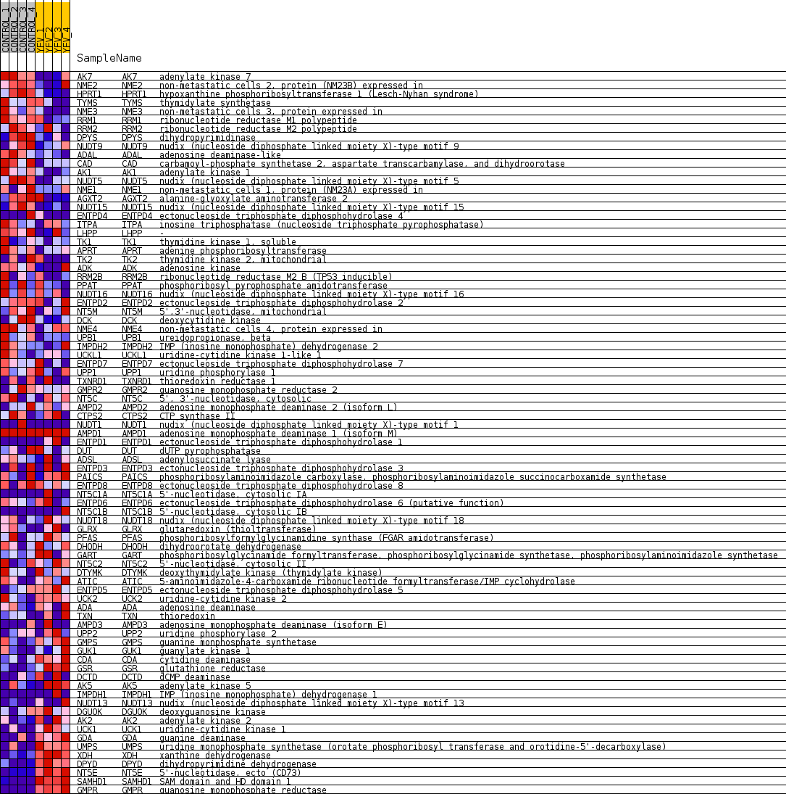
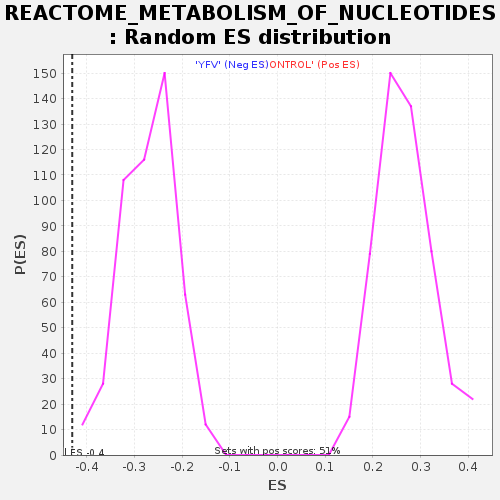

Profile of the Running ES Score & Positions of GeneSet Members on the Rank Ordered List
| Dataset | MATRIZ_GSE99081_collapsed_to_symbols.gsea_CLASE_99081.cls#CONTROL_versus_YFV |
| Phenotype | gsea_CLASE_99081.cls#CONTROL_versus_YFV |
| Upregulated in class | YFV |
| GeneSet | REACTOME_METABOLISM_OF_NUCLEOTIDES |
| Enrichment Score (ES) | -0.43020323 |
| Normalized Enrichment Score (NES) | -1.595525 |
| Nominal p-value | 0.0 |
| FDR q-value | 0.06743861 |
| FWER p-Value | 0.913 |
| SYMBOL | TITLE | RANK IN GENE LIST | RANK METRIC SCORE | RUNNING ES | CORE ENRICHMENT | |
|---|---|---|---|---|---|---|
| 1 | AK7 | adenylate kinase 7 | 411 | 0.867 | -0.0008 | No |
| 2 | NME2 | non-metastatic cells 2, protein (NM23B) expressed in | 1173 | 0.601 | -0.0307 | No |
| 3 | HPRT1 | hypoxanthine phosphoribosyltransferase 1 (Lesch-Nyhan syndrome) | 1233 | 0.588 | -0.0176 | No |
| 4 | TYMS | thymidylate synthetase | 2118 | 0.466 | -0.0591 | No |
| 5 | NME3 | non-metastatic cells 3, protein expressed in | 2182 | 0.458 | -0.0500 | No |
| 6 | RRM1 | ribonucleotide reductase M1 polypeptide | 2232 | 0.451 | -0.0401 | No |
| 7 | RRM2 | ribonucleotide reductase M2 polypeptide | 2249 | 0.449 | -0.0284 | No |
| 8 | DPYS | dihydropyrimidinase | 2566 | 0.402 | -0.0365 | No |
| 9 | NUDT9 | nudix (nucleoside diphosphate linked moiety X)-type motif 9 | 2588 | 0.398 | -0.0264 | No |
| 10 | ADAL | adenosine deaminase-like | 2602 | 0.396 | -0.0160 | No |
| 11 | CAD | carbamoyl-phosphate synthetase 2, aspartate transcarbamylase, and dihydroorotase | 2678 | 0.387 | -0.0096 | No |
| 12 | AK1 | adenylate kinase 1 | 2711 | 0.381 | -0.0007 | No |
| 13 | NUDT5 | nudix (nucleoside diphosphate linked moiety X)-type motif 5 | 2774 | 0.371 | 0.0060 | No |
| 14 | NME1 | non-metastatic cells 1, protein (NM23A) expressed in | 3186 | 0.322 | -0.0103 | No |
| 15 | AGXT2 | alanine-glyoxylate aminotransferase 2 | 3220 | 0.318 | -0.0033 | No |
| 16 | NUDT15 | nudix (nucleoside diphosphate linked moiety X)-type motif 15 | 3239 | 0.316 | 0.0046 | No |
| 17 | ENTPD4 | ectonucleoside triphosphate diphosphohydrolase 4 | 3293 | 0.311 | 0.0102 | No |
| 18 | ITPA | inosine triphosphatase (nucleoside triphosphate pyrophosphatase) | 3395 | 0.299 | 0.0124 | No |
| 19 | LHPP | - | 3522 | 0.287 | 0.0128 | No |
| 20 | TK1 | thymidine kinase 1, soluble | 3769 | 0.260 | 0.0050 | No |
| 21 | APRT | adenine phosphoribosyltransferase | 3857 | 0.254 | 0.0068 | No |
| 22 | TK2 | thymidine kinase 2, mitochondrial | 3909 | 0.249 | 0.0108 | No |
| 23 | ADK | adenosine kinase | 3938 | 0.247 | 0.0161 | No |
| 24 | RRM2B | ribonucleotide reductase M2 B (TP53 inducible) | 4010 | 0.242 | 0.0186 | No |
| 25 | PPAT | phosphoribosyl pyrophosphate amidotransferase | 4172 | 0.229 | 0.0151 | No |
| 26 | NUDT16 | nudix (nucleoside diphosphate linked moiety X)-type motif 16 | 4202 | 0.227 | 0.0198 | No |
| 27 | ENTPD2 | ectonucleoside triphosphate diphosphohydrolase 2 | 4377 | 0.214 | 0.0151 | No |
| 28 | NT5M | 5',3'-nucleotidase, mitochondrial | 4384 | 0.213 | 0.0208 | No |
| 29 | DCK | deoxycytidine kinase | 4406 | 0.211 | 0.0255 | No |
| 30 | NME4 | non-metastatic cells 4, protein expressed in | 4765 | 0.178 | 0.0084 | No |
| 31 | UPB1 | ureidopropionase, beta | 4869 | 0.169 | 0.0069 | No |
| 32 | IMPDH2 | IMP (inosine monophosphate) dehydrogenase 2 | 5058 | 0.153 | -0.0004 | No |
| 33 | UCKL1 | uridine-cytidine kinase 1-like 1 | 5119 | 0.147 | 0.0000 | No |
| 34 | ENTPD7 | ectonucleoside triphosphate diphosphohydrolase 7 | 5716 | 0.097 | -0.0341 | No |
| 35 | UPP1 | uridine phosphorylase 1 | 5861 | 0.087 | -0.0405 | No |
| 36 | TXNRD1 | thioredoxin reductase 1 | 5967 | 0.079 | -0.0448 | No |
| 37 | GMPR2 | guanosine monophosphate reductase 2 | 6094 | 0.069 | -0.0506 | No |
| 38 | NT5C | 5', 3'-nucleotidase, cytosolic | 6316 | 0.051 | -0.0628 | No |
| 39 | AMPD2 | adenosine monophosphate deaminase 2 (isoform L) | 6501 | 0.038 | -0.0731 | No |
| 40 | CTPS2 | CTP synthase II | 6599 | 0.032 | -0.0782 | No |
| 41 | NUDT1 | nudix (nucleoside diphosphate linked moiety X)-type motif 1 | 7412 | 0.000 | -0.1285 | No |
| 42 | AMPD1 | adenosine monophosphate deaminase 1 (isoform M) | 8031 | 0.000 | -0.1667 | No |
| 43 | ENTPD1 | ectonucleoside triphosphate diphosphohydrolase 1 | 9322 | -0.000 | -0.2466 | No |
| 44 | DUT | dUTP pyrophosphatase | 9570 | -0.006 | -0.2617 | No |
| 45 | ADSL | adenylosuccinate lyase | 9683 | -0.011 | -0.2683 | No |
| 46 | ENTPD3 | ectonucleoside triphosphate diphosphohydrolase 3 | 9871 | -0.020 | -0.2793 | No |
| 47 | PAICS | phosphoribosylaminoimidazole carboxylase, phosphoribosylaminoimidazole succinocarboxamide synthetase | 10347 | -0.048 | -0.3073 | No |
| 48 | ENTPD8 | ectonucleoside triphosphate diphosphohydrolase 8 | 10358 | -0.048 | -0.3066 | No |
| 49 | NT5C1A | 5'-nucleotidase, cytosolic IA | 10376 | -0.050 | -0.3062 | No |
| 50 | ENTPD6 | ectonucleoside triphosphate diphosphohydrolase 6 (putative function) | 10470 | -0.058 | -0.3103 | No |
| 51 | NT5C1B | 5'-nucleotidase, cytosolic IB | 10694 | -0.075 | -0.3220 | No |
| 52 | NUDT18 | nudix (nucleoside diphosphate linked moiety X)-type motif 18 | 10770 | -0.082 | -0.3243 | No |
| 53 | GLRX | glutaredoxin (thioltransferase) | 10999 | -0.101 | -0.3356 | No |
| 54 | PFAS | phosphoribosylformylglycinamidine synthase (FGAR amidotransferase) | 11133 | -0.113 | -0.3406 | No |
| 55 | DHODH | dihydroorotate dehydrogenase | 11228 | -0.122 | -0.3429 | No |
| 56 | GART | phosphoribosylglycinamide formyltransferase, phosphoribosylglycinamide synthetase, phosphoribosylaminoimidazole synthetase | 11350 | -0.133 | -0.3466 | No |
| 57 | NT5C2 | 5'-nucleotidase, cytosolic II | 11402 | -0.139 | -0.3458 | No |
| 58 | DTYMK | deoxythymidylate kinase (thymidylate kinase) | 11658 | -0.161 | -0.3570 | No |
| 59 | ATIC | 5-aminoimidazole-4-carboxamide ribonucleotide formyltransferase/IMP cyclohydrolase | 11695 | -0.163 | -0.3546 | No |
| 60 | ENTPD5 | ectonucleoside triphosphate diphosphohydrolase 5 | 11699 | -0.164 | -0.3501 | No |
| 61 | UCK2 | uridine-cytidine kinase 2 | 12007 | -0.194 | -0.3636 | No |
| 62 | ADA | adenosine deaminase | 12074 | -0.200 | -0.3620 | No |
| 63 | TXN | thioredoxin | 12128 | -0.206 | -0.3594 | No |
| 64 | AMPD3 | adenosine monophosphate deaminase (isoform E) | 12208 | -0.215 | -0.3582 | No |
| 65 | UPP2 | uridine phosphorylase 2 | 12664 | -0.261 | -0.3789 | No |
| 66 | GMPS | guanine monphosphate synthetase | 13030 | -0.304 | -0.3929 | No |
| 67 | GUK1 | guanylate kinase 1 | 13117 | -0.317 | -0.3892 | No |
| 68 | CDA | cytidine deaminase | 13325 | -0.341 | -0.3923 | No |
| 69 | GSR | glutathione reductase | 13838 | -0.416 | -0.4121 | No |
| 70 | DCTD | dCMP deaminase | 14109 | -0.465 | -0.4156 | Yes |
| 71 | AK5 | adenylate kinase 5 | 14132 | -0.469 | -0.4036 | Yes |
| 72 | IMPDH1 | IMP (inosine monophosphate) dehydrogenase 1 | 14335 | -0.500 | -0.4019 | Yes |
| 73 | NUDT13 | nudix (nucleoside diphosphate linked moiety X)-type motif 13 | 14637 | -0.526 | -0.4055 | Yes |
| 74 | DGUOK | deoxyguanosine kinase | 14714 | -0.545 | -0.3947 | Yes |
| 75 | AK2 | adenylate kinase 2 | 15230 | -0.702 | -0.4066 | Yes |
| 76 | UCK1 | uridine-cytidine kinase 1 | 15612 | -0.887 | -0.4050 | Yes |
| 77 | GDA | guanine deaminase | 15768 | -1.060 | -0.3844 | Yes |
| 78 | UMPS | uridine monophosphate synthetase (orotate phosphoribosyl transferase and orotidine-5'-decarboxylase) | 15850 | -1.208 | -0.3550 | Yes |
| 79 | XDH | xanthine dehydrogenase | 15981 | -1.511 | -0.3200 | Yes |
| 80 | DPYD | dihydropyrimidine dehydrogenase | 16018 | -1.667 | -0.2748 | Yes |
| 81 | NT5E | 5'-nucleotidase, ecto (CD73) | 16167 | -2.946 | -0.2001 | Yes |
| 82 | SAMHD1 | SAM domain and HD domain 1 | 16172 | -3.033 | -0.1140 | Yes |
| 83 | GMPR | guanosine monophosphate reductase | 16214 | -4.149 | 0.0015 | Yes |

